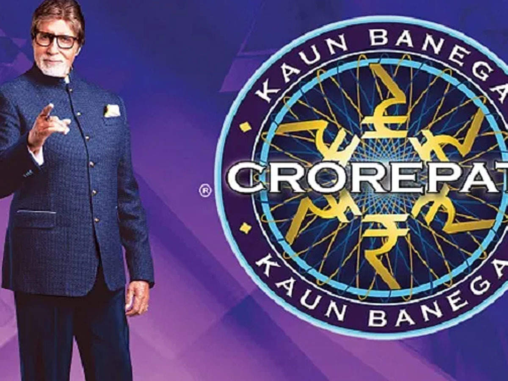

Who Wants To Be A Millionaire India
"Kaun Banega Crorepati" er den indiske versjonen av "Who Want s to Be a Millionaire", og har vært en av de mest populære TV-prog rammene i India siden den første gang ble sendt i 2000. Programmet er vert av den indiske filmstjernen Amitabh Bachchan og har en lig nende format som den engelske versjonen av showet. Deltakerne må sv are på flere spørsmål med økende vanskelighetsgrad for å vinne en sto r pengepremie på opptil 7 crore (ca 10 millioner norske kroner). Showet har også en lignende livslinje, der deltakerne kan be om hjelp fra en v enn eller ringe en ekspert for å øke sjansene for å svare riktig på spørs målene. "Kaun Banega Crorepati" er ansett som en av de mest innflytelsesrike og vellykkede TV-programmene i India.